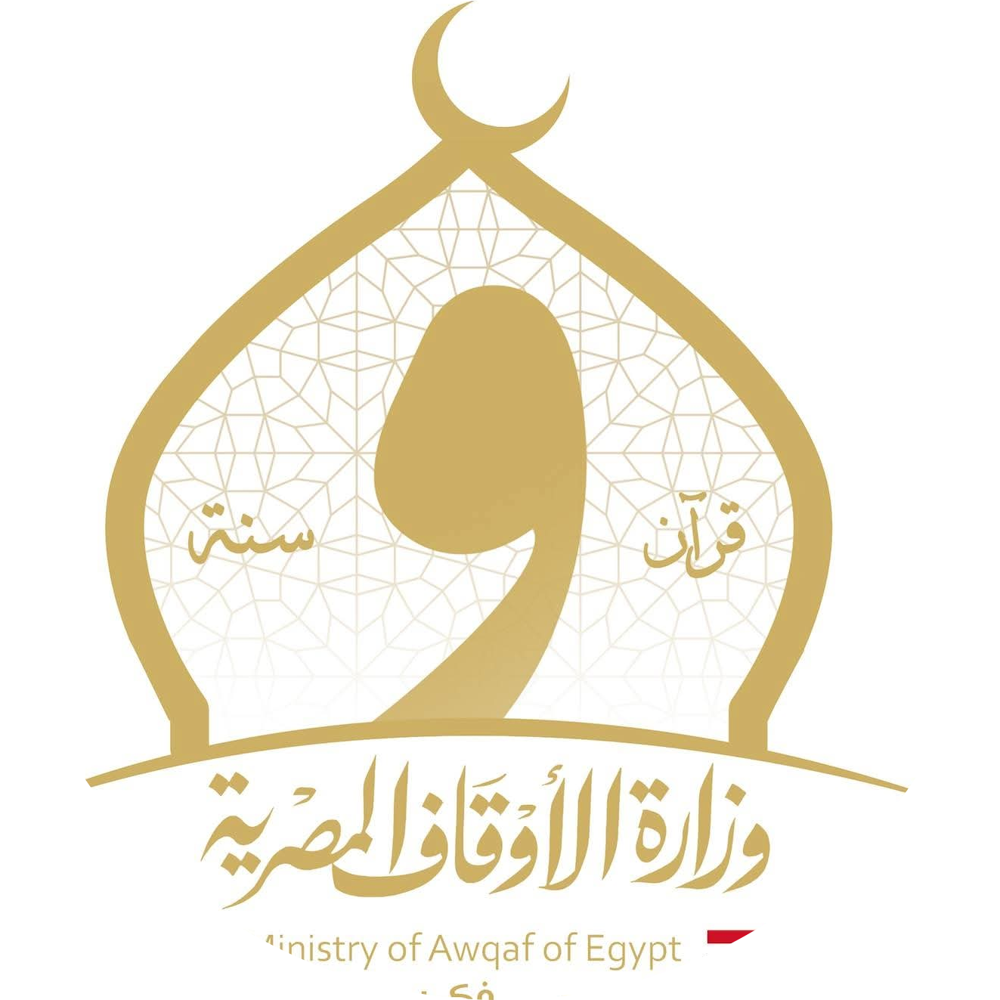

اضغط على السؤال لمعرفة الإجابة
تستند الجاينية إلى مبادئ اللاحَرْم (أهيمسا) المطلقة والتحرر الروحي. في العصر الرقمي، حيث أصبح الفضاء الافتراضي مجالاً للوجود والتفاعل تظهر حاجة ماسة لتطبيق المبادئ الجاينية لحماية الأرواح (جيفا) من أشكال الأذى الجديدة.
الأول: اللاحَرْم (أهيمسا) في الفضاء الرقمي
اللاحَرْم في الجاينية هي عدم الإيذاء بجميع أشكاله: بالجسد بالكلام وبالفكر. العالم الرقمي يمثل تحدياً ثلاثياً:
| مستوى اللاحَرْم | التحدي الرقمي | الممارسة الجاينية المقترحة |
|---|---|---|
| الجسدي | إرهاق الحواس، اضطراب النوم | تحديد أوقات استخدام، فترات راحة |
| اللفظي | خطاب الكراهية، التنمر، التشهير | الكلام الحقيقي، اللطيف، النافع |
| الفكري | الكراهية، الحقد، الاستياء الخفي | مراقبة الأفكار، تنقية النية |
كل روح (جيفا) هي كائني العزيز (لورد ماهافيرا) هذا يشمل الأرواح التي نلتقيها رقمياً.
الثاني: الخمسة نذور عظمى (ماهافراتاس) في العصر الرقمي
الثالث: نظافة الكلام (بهاشا ساميتي)
لورد ماهافيرا وضع قواعد دقيقة للكلام، تنطبق رقمياً:
الرابع: مفهوم الكارما الرقمي
في الجاينية الكارما هي مادة دقيقة تلتصق بالروح.
الأفعال الرقمية تولد كارما جديدة:
| الفعل الرقمي | نوع الكارما | التأثير الروحي |
|---|---|---|
| نشر كذب | كارما الجهل (موهنييا) | يحجب الحقيقة، يعزز الوهم |
| خطاب كراهية | كارما المشاعر السلبية | يعزز الغضب، الكراهية، التعلق |
| إدمان رقمي | كارما التعلق (ميسريا) | يربط الروح بالعالم المادي |
| مساعدة رقمياً | كارما الفضيلة (بونيا) | يخفف الكارما السابقة |
الخامس: الصيام الرقمي والانضباط
كما يمارس الجاينيون الصوم الجسدي، يقترح:
التوصيات الجاينية العملية
روح واحدة تتعذب وروح واحدة تتحرر في كل لحظة (نص جايني)
كل تفاعل رقمي هو فرصة لممارسة اللاحَرْم أو مخالفتها. الفضاء الرقمي كساحة جديدة للوجود يدعونا لتطبيق الانضباط الجايني بدقة أكبر لأن تأثير أفعالنا الرقمية قد يكون أوسع وأسرع من أي وقت مضى.
الطريق نحو التحرر (موكشا) يمر اليوم عبر الفضاء الرقمي أيضاً. إزالة الأذى الرقمي ليست مجرد مسؤولية اجتماعية بل هي ضرورة روحية لأي ساع نحو النقاء والتحرر.
في الفلسفات الإفريقية التقليدية الكون ككل عضوي مترابط والعلاقات البشرية مقدسة والحكمة الجماعية هي الأساس. الفضاء الرقمي الحديث يُختبر من خلال عدسة الأوبونتا (الوحدة في التعددية) والأوجانجو (الإنسانية المشتركة) وضرورة الحفاظ على إيكو (الانسجام الكوني).
الأول: الفضاء الرقمي كساحة جديدة للجماعة
أنا لأننا نحن ونحن لأنني أنا - مثل إفريقي
في الرؤية الإفريقية الهوية فردية وجماعية في آن.
الفضاء الرقمي:
- قد يعزز الجماعة عبر وصل المشتتين وحفظ التراث
- قد يُضعف الجماعة إذا استُخدم للانقسام والنميمة (السامبيا)
- يجب أن يخدم الأوجانجو (إنسانيتنا المشتركة) لا يُفقدها
الحكمة التقليدية:
كل كلمة تُقال تُسمعها الأسلاف والذين لم يولدوا بعد. الرقمي لا يُلغي هذه المسؤولية بل يوسعها.
الثاني: إزالة الأشواك عن الطريق كمسؤولية جماعية
كما في مجتمعات الأكان واليوروبا والبانتو حيث تنظيف الطريق مسؤولية مشتركة:
| المفهوم الإفريقي | تطبيقه الرقمي | خطر تركه |
|---|---|---|
| أوبونتا (الترابط) | ربط الحكمة التقليدية بالمعرفة الحديثة | قطيعة الأجيال، تهديد الهوية |
| إيكو (الانسجام) | خلق توازن بين التقليد والحداثة | اختلال التوازن الثقافي |
| أوجانجو (الإنسانية) | معاملة الآخر رقميًا كأخ في الإنسانية | تجريد الآخر من إنسانيته |
الثالث: أخلاقيات الكلام في العصر الرقمي
في فلسفة اليوروبا: كلماتنا تخلق عالمنا (أووو).
في الفضاء الرقمي:
الرابع: الحكمة الجماعية (الأدينكانسي) ضد الفردية الرقمية
الحكمة ليست في رأس واحد - مثل إفريقي
الخطر الرقمي: تضخيم الفردية على حساب الجماعة.
العلاج الإفريقي:
الخامس: مفهوم الزمن الإفريقي والسرعة الرقمية
الوقت ليس مالاً الوقت هو علاقة رؤية إفريقية
السرعة الرقمية تتعارض مع الزمن العضوي الإفريقي حيث:
- الزمن دوري لا خطي
- القيمة في العمق لا في السرعة
- العلاقات تحتاج زمنها الطبيعي
ممارسة مقترحة:
إيقاف إفريقي رقمي - التوقف لاستعادة إيقاع العلاقات الحقيقي.
التوصيات من المنظور الإفريقي
الخاتمة: العودة إلى الجذور عبر التقنية
عندما يموت عجوز في إفريقيا تحترق مكتبة كاملة - أمادو هامباتي با
الفضاء الرقمي فرصة تاريخية لحفظ مكتبات إفريقيا الحية قبل أن تحترق.
لكن يجب أن يكون هذا الحفظ:
- باحترام للسياقات الثقافية
- بمشاركة المجتمعات الأصلية
- بوعي بأن التقنية وسيلة لا غاية
الشجرة التي تنجو من العاصفة هي ذات الجذور العميقة
الخلاصة:
الفلسفة الإفريقية تدعونا لاستخدام العالم الرقمي لتعميق جذورنا لا لاقتلاعها؛ لتعزيز الجماعة لا تفكيكها لحفظ الحكمة لا تبديدها.
إزالة الأذى الرقمي هي عملية إعادة توازن بين التقدم التقني والحكمة التقليدية بين الفرد والجماعة بين السرعة والعمق.
تقوم الكونفوشيوسية على مبادئ الفضيلة (دِي) والعلاقات الإنسانية المتناغمة ورعاية المجتمع. في العصر الرقمي حيث تحول الفضاء الافتراضي إلى طريق (داو) جديد للمجتمع تظهر حاجة ملحة لتطبيق الحكمة التقليدية لحماية النظام الأخلاقي والإنساني.
أولاً: مفهوم إزالة العوائق في الفكر الكونفوشيوسي
لم يذكر كونفوشيوس إزالة الأذى عن الطريق حرفياً لكن المبدأ متجذر في فكرته عن رين (الإنسانية) ويي (الاستقامة).
الرجل المثالي (جونزي) يسعى لتحقيق النظام الاجتماعي المتناغم عبر:
- تطهير القلب/النوايا قبل الفعل
- تصحيح الأسماء (تحديد المسؤوليات بدقة)
- إزالة ما يعكر صفاء العلاقات الإنسانية
في العصر الرقمي الطريق لم يعد حجراً أو شوكاً مادياً بل أصبح: - معلومات مضللة تُعكِّر صفاء الفكر - خطابٌ يُفسد العلاقات الإنسانية - محتوى يُضعف الأخلاق الفردية والاجتماعية
ثانياً: خمسة أنواع من العوائق الرقمية التي تفسد المجتمع المتناغم
| العائق الرقمي | تأثيره على الفضائل الخمس |
|---|---|
| الكذب والتضليل | يُفسد الثقة (شين) بين الحاكم والمحكوم، بين الصديقين وفي السوق |
| الخطاب المُفرِّق | يُضعف الانسجام الأسري والاجتماعي (الشياو - البر بالوالدين) |
| المحتوى الفاسد | يُشوِّه اللياقة والأدب (لي) ويُضعف ضبط النفس |
| الإلهاء المستمر | يُعطِّل الحكمة والمعرفة (تشيه) والجدية في التعلم |
| العزلة الافتراضية | تُقوِّض العلاقات الإنسانية الواقعية وواجباتها |
ثالثاً: المسؤولية المتدرجة في الفضاء الرقمي توسعة مفهوم تصحيح الأسماء
مبدأ تصحيح الأسماء (تشينغ مينغ) يحدد أن كل شخص يجب أن يعرف مسؤولياته ويتبعها.
في الفضاء الرقمي:
الفضاء الرقمي لا يلغي هذه المسؤوليات بل يوسع نطاقها.
رابعاً: تطبيق الطريق الوسط (تشونغ يونغ) في التعامل الرقمي
الطريق الوسط يرفض التطرف:
- لا رفضاً كاملاً للتقنية تجنب العزلة عن تطور العصر
- لا انغماساً كاملاً فيها تجنب فقدان الجوهر الإنساني
بل استخدام متوازن يحقق:
- فائدة عملية مع حفظ القيم الأخلاقية
- اتصال معلوماتي مع حماية العمق الفكري
- تحديث الوسائل مع الحفاظ على الأصول الأخلاقية
خامساً: خطر الفضاء الرقمي على طقوس اللياقة (لي)
اللياقة (لي) في الكونفوشيوسية ليست شكليات فارغة بل تعبير خارجي عن احترام داخلي.
الفضاء الرقمي يهددها من خلال:
- الاختصارات اللغوية التي تُفقِد الكلام وقاره
- التفاعلات السريعة التي تهمل التسلسل الهرمي الاجتماعي
- الشفافية المفرطة التي تنتهك حدود العلاقات الخاصة
- السرعة الرقمية التي تُضعف التأني والتأمل قبل الكلام
خاتمة: توصيات من منظور كونفوشيوسي
إن كان المرء لا يعرف أن يتكلم بما يليق، فليس له أن يتكلم - مناقشات 4:24
الفضاء الرقمي اختبار حقيقي للإنسان المثالي (جونزي) في عصرنا. كل كلمة نكتبها كل صورة نشاركها كل تفاعل رقمي نقوم به هو فرصة لممارسة الإنسانية (رين) والاستقامة (يي) واللياقة (لي). إزالة العوائق الرقمية ليست مجرد تنظيف تقني بل هي تطهير أخلاقي للطريق الذي تسير عليه الإنسانية جمعاء نحو المجتمع المتناغم الأكبر.
في الفلسفة الطاوية الطريق (تاو) يُظهر نفسه عبر العفوية والتوازن. العالم الرقمي الحديث هو تعبير جديد عن تدفق التاو لكنه قد يحيد عن جريانه الطبيعي إذا اختل توازن الـ"ين واليانغ".
الأول: التاو الرقمي والتدفق الطبيعي
التاو يتدفق كالماء يملأ الفراغات دون جهد. العالم الرقمي:
- قد يُعيق الـ"وو وي" (العمل من خلال عدم الفعل) عندما تصبح التفاعلات قسرية
- قد يخلق فائضاً من اليانغ (فعل مفرط) من خلال التحفيز المستمر
- قد يُضعف الـ"تزو ران" (العفوية الطبيعية) عبر التخطيط المبالغ للتواصل
التاو الذي يمكن وصفه ليس التاو الأزلي التحدي الرقمي يكمن في محاولة احتواء اللا محدود في واجهات محدودة.
الثاني: تشو الزائد وعسر الهضم الرقمي
مبدأ التشو (الفراغ/ الحيز) أساسي في الطاوية.
العالم الرقمي غالباً:
- يملأ كل فراغ بالتشويش والمعلومات
- يُقلص المساحة الداخلية للتأمل واللا فعل
- يُحول الـ"شن" (الروح/ العقل) إلى مستودع مزدحم
ثلاثون متحدثاً يتحدون في محور واحد لكن الفراغ بينهم هو ما يجعل العربة مفيدة (التاو ته تشينغ)
قيمة التواصل تكمن في المساحات بين الرسائل لا في تراكمها.
الثالث: الين واليانغ الرقمي
| العنصر الرقمي | طاقته | خطر الخلل |
|---|---|---|
| المحتوى المستهلك | يانغ (استقبال نشط) | فرط اليانغ: إرهاق الحواس |
| الصمت الرقمي | ين (استيعاب سلبي) | فرط الين: انفصال عن تدفق المعلومات |
| التواصل السريع | يانغ (دفق نشط) | سرعة تتعارض مع تدفق التاو الطبيعي |
| التأمل ما رقمي | ين (توقف سلبي) | ضروري لاستعادة التوازن |
الرابع: العودة إلى البساطة (بو)
البساطة الطبيعية (بو - الكتلة غير المنحوتة) تتعرض للخطر عبر:
- التعقيد الزائد للواجهات والتطبيقات
- الاصطناع في الهويات والتواصل الرقمي
- التراكم الرقمي غير الضروري
ممارسة طاوية رقمية:
حذف ما لا يخدم الجوهر تبسيط الوجود الرقمي، العودة إلى الوظائف الأساسية.
الخامس: تشي الرقمي وتناغم الإنسان مع الكون
طاقة الـ"تشي" الشخصية تتأثر بالعالم الرقمي:
- تشي السماء (طاقة الكون): تنقطع بسبب الانشغال بالشاشات
- تشي الأرض (طاقة الطبيعة): تُهمل لصالح الواقع الافتراضي
- تشي الإنسان (طاقة الجسد والروح): تُستنزف بالتحديق الطويل
التمرين الطاوي:
ممارسة تشي غونغ رقمي - تنظيم التنفس - أخذ فترات راحة للعينين - ممارسة النظر إلى البعيد بين الجلسات
التوصيات الطاوية للوجود الرقمي المتوازن
الطريق الذي يمكن سلوكه ليس الطريق الدائم والاسم الذي يمكن نطقه ليس الاسم الدائم (التاو ته تشينغ)
العالم الرقمي هو تعبير مؤقت عن التاو كالنهر الذي يتغير مجراه باستمرار. الحكمة تكمن في الانسياب مع التدفق الرقمي دون التعلق به في استخدام الأداة دون أن نصبح أداة لها في الاتصال دون فقدان الجوهر وفي التقدم التقني مع الحفاظ على البساطة الأصلية.
الطريق الأمثل هو الطريق الأوسط الرقمي: استخدام التقنية كجسر لا كغاية كوسيلة للتواصل مع التاو لا كحاجز عنه. عندما نعيد التوازن يعود تدفق التشي ويعود الانسجام مع الطريق الكبير الذي يسري في كل شيء حتى في البتات والبايتات.
تقوم الزرادشتية على الصراع الكوني بين أهورامزدا (النور/الحقيقة/النظام) وأهريمان (الظلام/الكذب/الفوضى). في العصر الرقمي أصبح الفضاء الافتراضي ساحة جديدة لهذا الصراع حيث تظهر أشكال حديثة من الدروج (الكذب/الفساد) التي تهدد النظام الأخلاقي.
الأول: الفضاء الرقمي كميدان للصراع الكوني
في الرؤية الزرادشتية العالم ميدان للاختيار بين أشا (الحقيقة/النظام) ودروج (الكذب/الفوضى).
الفضاء الرقمي:
- يعزز أشا عندما ينشر المعرفة النافعة، العدل، والحقيقة
- يعزز دروج عندما ينشر الكذب، الفوضى الأخلاقية، والتمييز
- أصبح ساحة معركة حيث كل تفاعل رقمي هو تصويت لصالح النور أو الظلام
باختياراتنا نصنع العالم كل نقرة كل مشاركة هي اختيار في الصراع الكوني.
الثاني: الدروج الرقمية أشكال الكذب الحديثة
| نوع الدروج (الفساد) | مظاهره الرقمية | تأثيره على نظام أشا |
|---|---|---|
| دروج الكذب | الأخبار المزيفة، المعلومات المضللة | يُضعف أساس المجتمع: الثقة والحقيقة |
| دروج الفوضى | خطاب الكراهية، التحريض على العنف | يُدمر النظام الاجتماعي والوئام |
| دروج التلوث الفكري | المحتوى الفاسد، المواد الإباحية | يُلوث العقل (المانا) والروح (الروفان) |
| دروج الانقسام | خلق الفتنة، تعزيز التعصب | يُقسّم المجتمع ضد نفسه |
الثالث: الفضائل الست (أميشا سبينتا) في العصر الرقمي
الرابع: مفهوم الثنائية الرقمية
الثنائية الزرادشتية (النور/الظلام) تتجلى رقمياً:
| قوى النور | قوى الظلام |
|---|---|
| المحتوى النافع | المحتوى الضار |
| الكلام الصادق | الكلام الكاذب |
| الوحدة والتعاون | الانقسام والصراع |
| التوازن والاعتدال | الإفراط والإدمان |
الممارسة الزرادشتية: تعزيز قوى النور في كل تفاعل رقمي ومقاومة قوى الظلام بنشاط.
الخامس: دور الإنسان كحارس ومعاون للنظام
الإنسان في الزرادشتية هو حليف أهورامزدا في محاربة الظلام. في العصر الرقمي:
التوصيات الزرادشتية العملية
الخاتمة: الفضاء الرقمي كفرصة للانتصار النهائي
من خلال: الأفكار الصالحة الأقوال الصالحة الأفعال الصالحة نقترب من أهورامزدا"** (من نصوص الأفيستا)
العصر الرقمي ليس تهديداً فحسب بل هو فرصة عظيمة لنشر النور والحقيقة على نطاق غير مسبوق. كل إنسان مرتبط بالإنترنت هو جندي محتمل في جيش النور قادر على اختيار أشا على دروج في كل لحظة.
الزرادشتية تدعونا لنكون فاعلين لا منفعلين في هذه الساحة الجديدة. إزالة الأذى الرقمي هو واجب ديني وأخلاقي لأنه جزء من الحرب الكونية ضد قوى الظلام والفساد. عندما ننقي الفضاء الرقمي، لا ننظف شاشات فحسب بل نساهم في انتصار النور النهائي على الظلام.
في العقيدة الشنتوية الطهارة (هاراي) والتناغم مع الكامي هما جوهر الوجود. فالعالم الرقمي الحديث كطريق جديد تسلكه الأرواح يحتاج إلى تطبيق مبادئ الشنتو للحفاظ على النقاء الروحي والانسجام الاجتماعي.
الأول: الطريق كفضاء مقدس للكامي
في الشنتو الطرق والأماكن العامة هي مسالك للكامي (الأرواح الإلهية).
الفضاء الرقمي اليوم:
- أصبح طريقاً رقمياً تسلكه أرواح البشر يومياً
- يحتاج إلى تطهير مستمر كما تُطهر المزارات والمقدسات
- يصبح مكاناً لتجلي الكامي أو للتدنيس إذا أسيء استخدامه
الكلمة المنطوقة لها روحها وهذا ينطبق على الكلمة المكتوبة رقمياً أيضاً. كل محتوى رقمي يحمل طاقة روحية (كيه) تؤثر على مسار الإنسان.
الثاني: أنواع التدنيس الرقمي (كيغاري)
التدنيس الروحي (كيغاري) في العصر الرقمي يتجلى في:
| نوع التدنيس | مظهره الرقمي | تأثيره على التناغم (وا) |
|---|---|---|
| تدنيس الكلمة | الكلام البذيء، الشتائم، الخطاب البغيض | يُبعد الكامي، يُفسد نقاء المكان الرقمي |
| تدنيس الصورة | الصور المؤذية، المحتوى المستهجن | يُضعف قدسية الوجود البشري والطبيعي |
| تدنيس العلاقة | قطع الروابط، التنمر، العزلة الاجتماعية | يُعطل تناغم المجتمع (شا-إن-وا) |
| تدنيس الذاكرة | تزوير التاريخ، تشويه التراث | يقطع الصلة بالأسلاف والكامي الحارسين |
الثالث: ممارسات التطهير الرقمي (هاراي / ميسوغي)
كما تُطهر المزارات والأجساد، يجب تطهير الفضاء الرقمي:
الرابع: الكامي الرقمي وعبادة الأسلاف
الفضاء الرقمي يؤثر على علاقتنا بـ:
- كامي الطبيعة: انفصال عن الطبيعة بسبب الإدمان الرقمي
- أرواح الأسلاف: استبدال طقوس الذكرى بالتواصل السطحي
- كامي المكان: تجاهل الأماكن المقدسة الحقيقية لصالح الواقع الافتراضي
الممارسة الموصى بها: استخدام التقنية لتسجيل وتكريم الأماكن المقدسة والأسلاف لا للهروب منها.
الخامس: فن الميسوغي الرقمي (التنقية الذاتية)
التمرين الروحي:
التوصيات العملية من منظور شنتوي
إن النقاء أساس كل شيء، ومنه ينبع التناغم مع قوى الكون - حكمة شنتوية
الطريق الرقمي ككل الطرق يجب أن يُسلك بنقاء قلب وتواضع روح. كل تفاعل رقمي هو لقاء مع أرواح الآخرين ومع الكامي التي تسكن العالم. تطهير هذا الطريق ليس رفاهية بل ضرورة روحية لتحقيق التناغم بين العالم المادي والرقمي بين الإنسان والكامي بين الحاضر وتراث الأسلاف. في النقاء الرقمي نجد الطريق إلى الانسجام الحقيقي.
تستند البوذية إلى مبادئ "النبلاء الأربعة" والتخلّص من المعاناة (دوكها). في العصر الرقمي حيث تحول الفضاء الافتراضي إلى مسار يومي للوعي يصبح تطبيق "الطريق الثماني النبيل" ضرورياً لمواجهة أشكال المعاناة الجديدة التي تولدها المنصات الرقمية.
أولاً: اللاحَرْم (أهيمسا) تتجاوز العالم المادي
مبدأ عدم الإيذاء هو أساس الأخلاق البوذية.
لا يقتصر هذا على الأفعال الجسدية بل يشمل الكلام (فاجا) والفكر.
يقول بوذا: "الكلمات التي لا تسبب ندمًا... هي كلمات حسنة". الفضاء الرقمي يضخّم قدرة الكلمة على الإيذاء مما يجعل "الخطاب السليم" (صحيح الكلام) من أهم الممارسات في عصرنا.
ثانياً: ثلاثة أنواع من السموم الرقمية
تعلم البوذية أن أصل المعاناة يكمن في السموم الثلاثة:
ثالثاً: الوعي (ساتي) كحارس للطريق الرقمي
"الوعي" في البوذية هو الحارس عند بوابة الحواس في العالم الرقمي حيث تتدفق المحفزات بلا توقف تصبح ممارسة الوعي ضرورية:
رابعاً: الخوارزميات واللا-ذات (أناتا)
تواجه البوذية معضلة رقمية: الخوارزميات تبني "ذاتاً" وهمية (أناتا) من خلال:
خامساً: التعاطف (كارونا) والحكمة (براجنا) في الفضاء الافتراضي
يجب أن يوجه التعاطف والحكمة تفاعلاتنا الرقمية:
سادساً: العزلة والاتصال في زمن الترابط
يخلق العالم الرقمي مفارقة: اتصال سطحي يؤدي إلى عزلة عميقة. الممارسات البوذية تذكرنا بأن:
خاتمة وتوصيات من منظور بوذي:
"نحن ما نكرره. التميز، إذاً، ليس فعلًا بل عادة." - مقولة بوذية
كل نقرة كل تفاعل كل ساعة نقضيها في العالم الرقمي هي فرصة لممارسة الوعي والتعاطف أو فرصة لتغذية السموم الثلاثة. الاختيار هو ممارسة يومية والطريق الرقمي مثل كل الطرق يمكن أن يقود إما إلى مزيد من المعاناة أو إلى اليقظة والتحرر.
تستند اليهودية إلى مبادئ الرحمة والبناء وتأمر بفعل "التِكّوم" (إزالة العثرة من الطريق) ليس كواجب فردي فحسب بل كمنهج أخلاقي شامل. في عصر وسائل التواصل الاجتماعي، تحول الطريق من مسار مادي إلى فضاء رقمي يسلكه الإنسان يومياً وقد يتعرض فيه لما قد يضر بعقله وقلبه وعلاقاته من هنا تنبع الحاجة لفهم أعمق لمفهوم الأذى والطريق في ضوء مقاصد الشريعة اليهودية (הלכה) وقيمها الأخلاقية (מוסר).
أولاً: إزالة الأذى واجب إنساني عام
لم تحدد التعاليم اليهودية هذا الواجب بأتباع الديانة اليهودية فقط. ففي سفر التثنية (22: 4) يُؤمر المرء بمساعدة من سقط حِمله حتى لو كان من خصومه.
أن مبدأ "לֹא תַעֲמֹד עַל דַּם רֵעֶךָ" (لا تقف مكتوف الأيدي على دم قريبك سفر اللاويين 19:16) يشمل منع كل ضرر محتمل.
الحكمة اليهودية ترى في حفظ الحياة والرفق بالآخرين ("פיקוח נפש" و"דרכי שלום") قيماً عليا تشمل الجميع دون تمييز.
ثانياً: الأذى يتجاوز المادي إلى المعنوي والأخلاقي
الأذى المراد إزالته لا يقتصر على الحجارة أو العوائق الملموسة بل يشمل:
ثالثاً: الحياة رحلة أخلاقية مستمرة
تنظر اليهودية إلى الحياة الدنيا كمسيرة ("דרך") يختبر فيها الإنسان ويبني عالمه "في كل الطرق اَعرفوه" (משלי ג:ו) دعوة للوعي الأخلاقي في كل مسار كل لحظة هي فرصة لاختيار: هل نساهم في تسهيل طريق الآخرين وبناء مجتمع ("תיקון עולם") أم نضع فيه العوائق وننشر الفساد?
رابعاً: تدمير الفكر والعقل من أشد الأذى
ما يضعف عقل الإنسان أو يدفعه للخطأ كبث الشكوك الهدامة أو نشر اليأس القاتل أو التحريض على الكراهية غير المبررة هو أذى خطير. العقل هو أداة فهم الإرادة الإلهية وتطبيق الشرعة ومسؤولية حمايته عظيمة.
من ينشر ما يفسد الأفكار ويشوه الحقيقة كمن يسمم بئر ماء يشرب منه الجميع.
خامساً: وسائل التواصل الاجتماعي: الطريق الرقمي للأذى المعاصر
أصبحت المنصات الرقمية طريقاً افتراضياً يسلكه الملايين وقد أدى سوء استخدامها إلى:
سادساً: الخوارزميات ليست محايدة، بل توجهها الربحية
معظم خوارزميات المنصات لا تميز بين الحق والباطل بل بين ما يدر ربحاً وما لا يدر.
هي تغذي المستخدم بما يلبي ميوله حتى لو كان ذلك يدمره نفسياً أو أخلاقياً. لذلك على الإنسان الواعي أن:
خاتمة وتوصيات في ضوء الرؤية اليهودية:
"مَنْ أَهْلَكَ نَفْسًا وَاحِدَةً، فَكَأَنَّمَا أَهْلَكَ عَالَمًا كَامِلًا، وَمَنْ أَحْيَا نَفْسًا وَاحِدَةً، فَكَأَنَّمَا أَحْيَا عَالَمًا كَامِلًا" (المشناه، سنهدرين 4:5).
العقل والروح هما عالم الإنسان الكامل وحمايتهما من الشرور الرقمية هي من أعظم صور إحياء النفس والإسهام في بناء عالم أكثر أماناً وكرامة.
تقوم المسيحية على محبة الله ومحبة القريب، وتدعو إلى إزالة كل ما يعترض طريق الخير والسلام. في عصر الوسائط الرقمية، حيث أصبح العالم الافتراضي طريقاً يسلكه الملايين يومياً تبرز الحاجة إلى فهم أعمق لدعوتنا كتلاميذ للمسيح في هذا المجال الجديد.
أولاً: خدمة القريب في الفضاء الرقمي
لم يحدد السيد المسيح وصية محبة القريب (مرقس ١٢:٣١) بحدود الجغرافيا أو الوسيط بل شملت كل إنسان نلتقيه.
يقول القديس بولس: "احملوا بعضكم أثقالاً وهكذا تمموا ناموس المسيح" (غلاطية ٦:٢).
إزالة الأذى الرقمي - سواء بالكلمة أو الصورة أو المعلومة - هي شكل حديث من أشكال حمل أثقال القريب، خاصة في عالم يعاني من العزلة والقلق.
ثانيًا: الأذى الجديد لأخوة المسيح
يحذر الكتاب المقدس من قوة الكلام: "الموت والحياة في يد اللسان" (أمثال ١٨:٢١).
في عصرنا امتد هذا اللسان إلى منصات التواصل الأذى الرقمي يشمل:
ثالثاً: الحياة رحلة نحو الملكوت
يرى المسيحيون الحياة كرحلة حج نحو ملكوت الله الفضاء الرقمي أصبح جزءاً من هذه الرحلة.
السؤال الذي يوجه ضمير المؤمن: هل أستخدم هذه الوسائل لخدمة إخوتي في الرحلة، أم أضع عثرات في طريقهم؟ (رومية ١٤:١٣). الدعوة هي أن نكون "ملحاً ونوراً" حتى في العالم الرقمي (متى ٥:١٣-١٦).
رابعاً: تجديد الذهن أمام التحدي الرقمي
يؤكد القديس بولس: "لا تشاكلوا هذا الدهر، بل تغيروا عن شكلكم بتجديد أذهانكم" (رومية ١٢:٢).
الخطر الأكبر في العصر الرقمي هو تشكيل أذهاننا وفقاً لقيم العالم لا لكلمة الله.
المحتوى الذي يشكك في الكرامة الإنسانية أو يبشر بالعنف أو يستغل الضعفاء هو أذى روحي يهدد خلاص النفوس.
خامساً: المسؤولية تجاه الضعفاء
يحمل المسيحيون مسؤولية خاصة تجاه "هؤلاء الصغار" (متى ١٨:٦).
المنصات الرقمية تعرض الصغار - سواء في السن أو في الإيمان - لمخاطر جسيمة:
سادساً: الحرية المسؤولة في عالم الخوارزميات
تدعو المسيحية إلى الحرية، ولكن "لا تتخذوا الحرية ذريعة للجسد" (غلاطية ٥:١٣).
الخوارزميات التي تغذي الشهوات والغضب تناقض دعوتنا للفضيلة وضبط النفس. على المؤمن أن:
خاتمة وتوصيات من منظور مسيحي:
"كل ما تريدون أن يفعل الناس بكم افعلوا هكذا أنتم بهم" (متى ٧:١٢)
هذه القاعدة الذهبية هي المفتاح لتعامل مسيحي أخلاقي في العصر الرقمي.
عندما نتعامل مع الآخرين عبر الشاشات علينا أن نتذكر أننا نتعامل مع أنفس مخلوقة على صورة الله ودُعينا لنكون حراساً لإخوتنا ساعين لبناء ملكوت المحبة حتى في أصغر تفاعلاتنا الرقمية.
الإسلام دين الرحمة والبناء يأمر بإماطة الأذى عن الطريق، لا فقط كفعل فردي، بل كمنهج حضاري شامل. وفي عصر السوشيال ميديا، تحوّل الطريق من مسار مادي إلى فضاء رقمي يمشيه الإنسان يوميًّا، ويُعرض فيه على ما قد يُهلك فكره، قلبه، وعلاقاته. من هنا تبرز الحاجة إلى فهم أعمق لمفهوم الأذى والطريق في ضوء مقاصد الشريعة.
أولًا: إماطة الأذى ليست حكرًا على المسلمين
لم يُقيّد النبي ﷺ إماطة الأذى بالمسلمين فقط، بل جعلها من شُعَب الإيمان العامّة. قال ﷺ: «الإيمانُ بضعٌ وسبعون شُعبة... وأدناها إماطةُ الأذى عن الطريق» (رواه مسلم). وهذا يشمل كل من يسلك الطريق مسلمًا كان أو غيره، لأن مقصد الشريعة حفظ الكلّ من الضرر دون تمييز بينهم.
ثانيًا: الأذى ليس ماديًّا فحسب، بل معنويٌّ أخطر
الأذى المراد إزالته لا يقتصر على الحجارة أو الشوك، بل يشمل:
ثالثًا: الحياة طريقٌ من المهد إلى اللحد
الحياة الدنيا مسيرة مؤقتة، قال ﷺ: «كُن في الدنيا كأنك غريبٌ أو عابرُ سبيلٍ» (رواه البخاري).
كل لحظة فيها اختبار: هل نُسهّل الطريق للناس؟ أم نضع فيه ما يُعثّرهم؟
من هنا فإن الطريق في الحديث النبوي ليس مكانًا جغرافيًّا، بل رحلة وجودية.
رابعًا: تدمير الفكر أذىٌ من أخطر الأذى
ما يُضعف عقل الإنسان أو يدفعه لقرار خاطئ كالتشكيك في القيم أو نشر اليأس أو التحريض على الغضب هو أذىٌ روحي وفكري.
العقل محلّ التكليف، قال تعالى: «إِنَّ السَّمْعَ وَالْبَصَرَ وَالْفُؤَادَ كُلُّ أُولَٰئِكَ كَانَ عَنْهُ مَسْئُولًا» (سورة الإسراء: 36).
من ينشر ما يُفسد الأفكار كمن ينشر السمّ في الطعام.
خامسًا: السوشيال ميديا طريقٌ جديدٌ للأذى الحديث
منصات التواصل أصبحت طريقًا افتراضيًّا يمشيه الملايين يوميًّا.
واستخدامها الخاطئ أدّى إلى:
سادسًا: البرامج ليست محايدة، بل تُدار بالربح لا بالهداية
الغالب من خوارزميات السوشيال ميديا لا تميّز بين الحق والباطل، بل بين ما يُدرّ ربحًا وما لا يُدرّ.
هي تُغذّيك بما تفضّله نفسيًّا حتى لو كان يُدمّرك روحيًّا.
لذا، على المسلم أن:
خاتمة وتوصيات
«وَمَنْ أَحْيَاهَا فَكَأَنَّمَا أَحْيَا النَّاسَ جَمِيعًا» (سورة المائدة: 32)
العقل سِرّ الحياة، وحمايته من أعظم أبواب الإحياء.
تُؤسس الهندوسية للحياة الأخلاقية على مفاهيم : الدارما (الواجب/ الفضيلة/ القانون الكوني) اللاحَرْم (عدم الإيذاء) الكارما (قانون السببية) في عصر الوسائط الرقمية حيث يُصبح الفضاء الافتراضي طريقًا يوميًا للملايين، تبرز الحاجة لتطبيق هذه المبادئ لحماية الرحلة الإنسانية من الأذى الجديد.
أولًا: إزالة الأذى (اللاحَرْم) واجب كوني وشامل
مبدأ اللاحَرْم (अहिंसा) هو أساس أخلاقي عالٍ لا يقتصر على أتباع الهندوسية بل هو واجب إنساني كوني يتجاوز كل الحدود.
في نصوص مثل ماهابهاراتا يُقال: اللاحَرْم هي أعلى دارما.
كما أن تعاليم الفاسوديفا كوتومباكام (رؤية العالم كأسرة واحدة) تدعو إلى رعاية كل الكائنات.
إزالة الأذى عن الطريق ماديًا كان أم معنويًا هو جزء من خدمة العالم (लोक संग्रह) وواجب كل إنسان.
ثانيًا: الأذى يتجلى في مستويات ثلاثية: الجسدي، الذهني، الروحي
الدارما تُعلمنا أن الأذى (هيما) لا يقتصر على الضرر المادي بل يشمل الأذى الأكثر خطورة:
ثالثًا: الحياة رحلة (ياترا) نحو التحرر
الحياة في الفلسفة الهندوسية هي رحلة ياترا للروح عبر دورات متعددة سامسارا تهدف في النهاية إلى التحرر موكشا.
كل فعل وكل كلمة وكل تفاعل هو خطوة على هذا الطريق.
السؤال الجوهري: هل أفعالنا على هذا الطريق الرقمي تُسهل رحلة الآخرين وتُزيل العوائق تنقية الكارما أم تخلق معاناة جديدة وتزيد من الارتباطات تراكم الكارما السلبية؟
رابعًا: تلوث العقل أخطر أنواع التلوث
تنص النصوص على وجود ثلاثة أنواع من التلوث (دوشاس) داخل الإنسان: تاماس (الجهل والكسل) وراجاس (الشهوة والغضب). المحتوى الرقمي الضار يُمكن أن يُغذي هذه الدوشاس بشكل هائل ويُلوث العقل (ماناس) أكثر من أي قذارة مادية.
العقل الهادئ والنقي (ساتفيك) هو أداة ضرورية للتمييز (فيفيكا) وللمعرفة (جنانا).
أي شيء يشوه العقل ويبعده عن طبيعته الساتفيكية هو أذى عظيم يجب إزالته.
خامسًا: المنصات الرقمية: ساحة جديدة للكارما والدارما
أصبحت وسائل التواصل الاجتماعي ساحة حية حيث تُخلق الكارما بسرعة هائلة. استخدامها الخاطئ يؤدي إلى:
سادسًا: الخوارزميات تُغذي الأنا (أهانكارا) وتُعزز الجهل (أفيديا)
تغذي معظم الخوارزميات الأهانكارا الغرور والشعور بالانفصال من خلال إحاطة المستخدم بما يؤكد تحيزاته ويُرضي رغباته الذاتية الضيقة، مما يُعزز الأفيديا الجهل الأساسي بوحدة الوجود.
هذا ضد جوهر التعاليم التي تدعو إلى تجاوز الأنا والبحث عن الحقيقة الموحدة (أدفايتا).
خاتمة وتوصيات في ضوء الحكمة الهندوسية:
"أتمنى السلام لجميع الكائنات في كل العوالم." (شانتي مانترا)
الفضاء الرقمي أصبح أحد العوالم التي نسكنها.
تطبيق مبدأ اللاحرم فيه ليس رفاهية بل ضرورة روحية وأخلاقية لإصلاح عالمنا المشترك (لوكا سانغراها) وخلق مسار آمن للجميع في رحلتهم نحو النور والحكمة.
تنطلق الرؤية الأخلاقية الإنسانية من مبدأين أساسيين: كرامة الإنسان المتأصلة والمسؤولية العقلانية تجاه البشرية جمعاء. في العصر الرقمي حيث تحول الفضاء الافتراضي إلى بيئة وجودية جديدة تظهر حاجة ملحة لتطبيق التفكير الأخلاقي العقلاني لحماية الإنسانية من أذى قد يكون غير مسبوق في تاريخها.
الأول: العقلانية الأخلاقية كمنطلق
"يجب أن نتعامل مع الإنسانية سواء في شخصنا أو في شخص الآخرين دائماً كغاية في حد ذاتها وليس مجرد وسيلة"
إيمانويل كانط (الصيغة الإنسانية للأمر القاطع)
الفضاء الرقمي يُختبر من خلال معيارين إنسانيين أساسيين:
الثاني: أنواع الأذى الرقمي من منظور إنساني
| نوع الأذى | أسبابه الرقمية | انتهاكه للمبادئ الإنسانية |
|---|---|---|
| الأذى المعرفي | المعلومات المضللة، الأخبار المزيفة | يهدم أساس المجتمع العقلاني: المعرفة الموثوقة |
| الأذى النفسي | التنمر، خطاب الكراهية، الترهيب | ينتهك الكرامة الإنسانية والصحة النفسية |
| الأذى الاجتماعي | التمييز الرقمي، الفقاعات المعرفية | يُضعف التضامن الإنساني والعدالة الاجتماعية |
| الأذى الوجودي | الإدمان الرقمي، تشتيت الانتباه المستمر | يعيق تحقيق الإمكانات البشرية الكاملة |
الثالث: المبادئ الإنسانية السبعة للسلوك الرقمي
الرابع: العقد الاجتماعي الرقمي الجديد
"الحقوق تقابلها مسؤوليات" مفهوم إنساني أساسي
فالمستخدم الرقمي في الرؤية الإنسانية ليس مستهلكاً سلبيًا بل مواطن رقمي بكل ما تحمله الكلمة من حقوق وواجبات:
| حقوق المواطن الرقمي | واجبات المواطن الرقمي |
|---|---|
| الخصوصية والبيانات الآمنة | احترام خصوصية الآخرين |
| الوصول للمعلومات الموثوقة | التحقق والمشاركة المسؤولة |
| حرية التعبير البناء | تجنب الخطاب المؤذي |
| المشاركة في تشكيل البيئة الرقمية | المساهمة في تحسينها للأجيال القادمة |
الخامس: العقلانية النقدية ضد الخوارزميات الانفعالية
الخطر الأكبر: تحويل البشر إلى كائنات رد فعل بدلاً من كائنات تفكر.
الممارسة الإنسانية:
التوصيات العملية من منظور إنساني
الخاتمة: الإنسانية في مواجهة نفسها رقمياً
ما لا يمكن قياسه ليس أقل واقعية وما لا يمكن رقمنته ليس أقل إنسانية.
التحدي الأخلاقي الأعظم في العصر الرقمي: أن نبقى بشراً في عالم يحاول أحياناً تجاوز إنسانيتنا. إزالة الأذى الرقمي ليست مهمة تقنية فحسب بل هي مشروع إنساني وجودي لحماية جوهرنا المشترك.
الرؤية الإنسانية تذكرنا: التقنية تخدم الإنسانية عندما تُستخدم لتعزيز كرامتنا، حريتنا الواعية، تضامننا، وعقلانيتنا. عندما تُستخدم ضد هذه القيم يجب أن نعيد توجيهها أو نرفضها.
الاختبار النهائي: أي فعل رقمي أي منصة أي خوارزمية هل تزيد من إنسانيتنا المشتركة أم تنقص منها؟ الجواب على هذا السؤال هو بوصلة أخلاقيتنا في العصر الرقمي.
نهدف من خلال مبادرة "قصص الحضارات" إلى حماية النسيج المجتمعي المصري من مخاطر التفكك الإلكتروني، عبر تمكين الأسرة واستعادة التوازن النفسي والاجتماعي.
بدأنا من مصر، حيث يهدد الوهم الرقمي استقرار الأسرة والمجتمع، ونطمح إلى إطلاق صرخة عالمية لحماية الإنسانية من مخاطر الإدمان الرقمي — عبر تمكين الأسرة، واستعادة التوازن النفسي، وبناء فضاء رقمي إنساني.
من قلب الحضارة المصرية، نطلق رسائلنا إلى العالم:
• التكنولوجيا أداة، وليس بديلاً عن الإنسانية.
• الأسرة هي الحصن الأول ضد الانهيار الرقمي.
• الوعي الرقمي حقٌّ لكل فرد، وواجبٌ على كل مجتمع.
• لا مستقبل آمن دون توازن بين التقدم الرقمي والقيم الإنسانية.

رصد ومعالجة حالات التفكك الأسري الناتج عن الإدمان الرقمي عبر لجان الفتوى المتخصصة.
العمل على استقرار الأسرة ومواجهة الانعزال الرقمي داخل البيت الواحد عبر برامج المشورة.

مبادرة سكن ومودة لتثقيف المتزوجين بمخاطر التكنولوجيا على استقرارهم النفسي.
ألف حالة طلاق سنوياً
مليون هاتف محمول
ساعات يومية أمام الشاشات للأطفال
مليار جنيه خسائر إنتاجية سنوياً
مليار جنيه تكلفة العلاج النفسي
مليار جنيه خسائر النصب الإلكتروني
في عالم يتسارع نحو الرقمنة بلا حدود، ندعو إلى:
• إعادة الإنسان إلى مركز الاهتمام.
• بناء جسور بين الحضارات عبر القيم المشتركة.
• تحويل التكنولوجيا من مصدر للعزلة إلى أداة للتواصل والتفاهم.
• غرس روح المسؤولية الرقمية في نفوس الأجيال القادمة.
لأن الحضارة الحقيقية لا تقاس بالشاشات، بل بالإنسان.